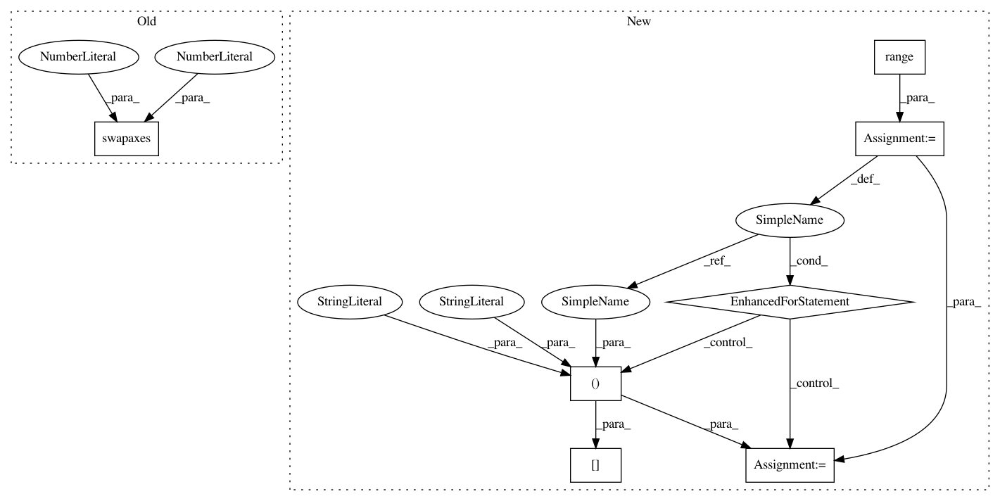

bbc4e3ee65ab504be761e3b5487ce4ccdd589da0,GPflow/svgp.py,SVGP,build_likelihood,#SVGP#,46
Before Change
def f(w):
R = tf.triu(w)
return -tf.reduce_sum(tf.log(tf.user_ops.get_diag(R))) + 0.5*tf.reduce_sum(tf.square(R))
KL += theano.scan(f, self.q_sqrt.swapaxes(0,2))[0].sum()
fmean, fvar = conditionals.gaussian_gp_predict_whitened(self.X, self.Z, self.kern, self.q_mu, self.q_sqrt)
else:
L = tf.cholesky(self.kern.K(self.Z) + eye(self.num_inducing) * 1e-4)
After Change
KL += -tf.reduce_sum(tf.log(self.q_sqrt)) + 0.5*tf.reduce_sum(tf.square(self.q_sqrt))
else:
//here we loop through all the independent columns, extracting the triangular part.
for d in range(self.num_latent):
L = tf.user_ops.triangle(self.q_sqrt[d,:,:], "lower")
KL += -tf.reduce_sum(tf.log(tf.user_ops.get_diag(L))) + 0.5*tf.reduce_sum(tf.square(L))
fmean, fvar = conditionals.gaussian_gp_predict_whitened(self.X, self.Z, self.kern, self.q_mu, self.q_sqrt)
else:
L = tf.cholesky(self.kern.K(self.Z) + eye(self.num_inducing) * 1e-4)
alpha = tf.user_ops.triangular_solve(L, self.q_mu, "lower")
In pattern: SUPERPATTERN
Frequency: 3
Non-data size: 7
Instances
Project Name: GPflow/GPflow
Commit Name: bbc4e3ee65ab504be761e3b5487ce4ccdd589da0
Time: 2016-01-18
Author: james.hensman@gmail.com
File Name: GPflow/svgp.py
Class Name: SVGP
Method Name: build_likelihood
Project Name: GPflow/GPflow
Commit Name: bbc4e3ee65ab504be761e3b5487ce4ccdd589da0
Time: 2016-01-18
Author: james.hensman@gmail.com
File Name: GPflow/svgp.py
Class Name: SVGP
Method Name: build_likelihood
Project Name: GPflow/GPflow
Commit Name: a9273fb766562261b2ccedb635c71363fb10f06c
Time: 2016-01-18
Author: james.hensman@gmail.com
File Name: GPflow/svgp.py
Class Name: SVGP
Method Name: build_likelihood
Project Name: SheffieldML/GPy
Commit Name: a24853da6b5c1201184fb60265c0b08b7d77e3cd
Time: 2015-04-28
Author: ibinbei@gmail.com
File Name: GPy/core/sparse_gp.py
Class Name: SparseGP
Method Name: _raw_predict